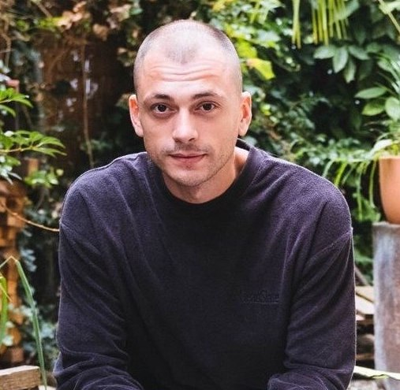

Wir suchen eine Wohnung!
Yevhen
31 j.a.
Alina

29 j.a.
Yasmina

6 j.a.
Über uns
Ich kam mit meiner Tochter Yasmina im März 2022 aus der Ukraine
nach Zürich. Wir hatten das Glück, die wunderbare Gastfamilie Larissa
und Sven kennenzulernen, die uns beherbergte und uns bei der Integration
in unser neues Leben half. Ende Jule 2022 wurde unsere Familie wieder
komplett - mein Mann und der Vater von Yasmin kamen an!
Wir sind eine ruhige und saubere Familie, wir haben keine
Haustiere, keine schlechten Angewohnheiten und würden uns sehr freuen,
eine gemütliche Wohnung zu finden! Yevhen arbeitet als Koch im
Restaurant Münsterhof im Zentrum von Zürich. Ich habe einen Abschluss in
Webentwicklung und bin aktiv auf der Suche nach einem Job. Unsere
Tochter geht dieses Jahr in die erste Klasse.
Vom 22. September bis Mai 2003 lebten wir in einer Sozialwohnung,
aber wir mussten wegen ungeeigneter Lebensbedingungen gehen. Seit 5
Monaten leben wir in einer separaten Wohnung, die wir mithilfe von AOZ
und Yevhens Arbeitsvermittlung.
{kind=link}
Hier finden Sie ein Dokument, das die Garantie von AOZ bestätigt.
Garantiedokument von AOZ📃{kind=link}
Nachfolgend finden Sie Empfehlungen der Gastgeberfamilie.
Empfehlungen📝{kind=link}
Contacts
- +41795091287
- pismenna.alina18@gmail.com